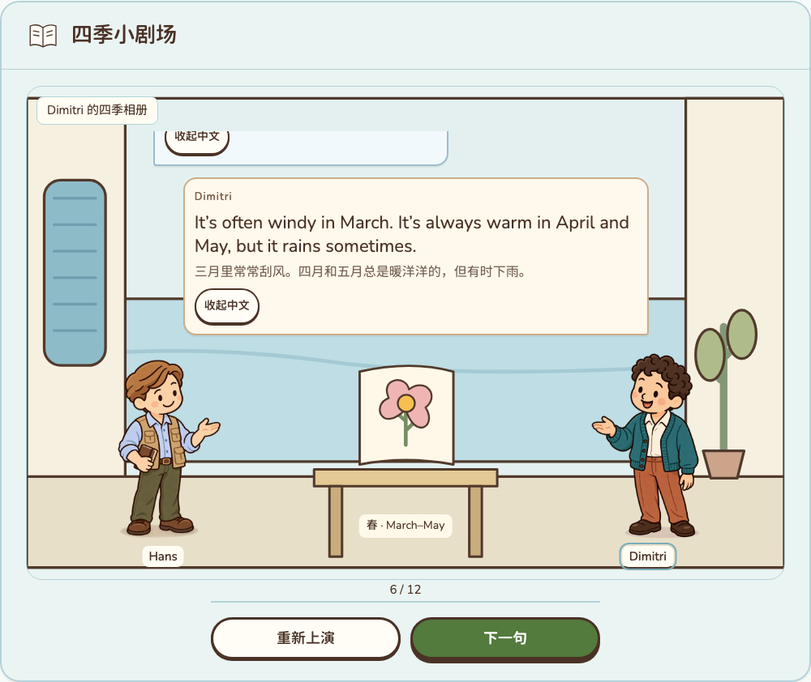
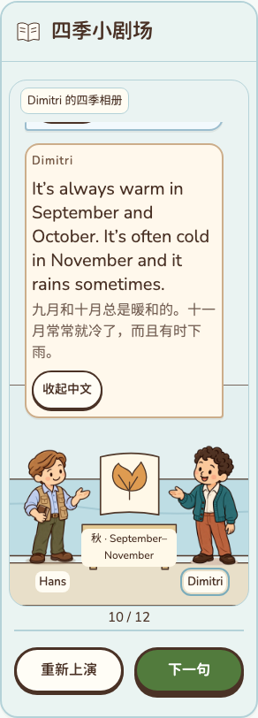
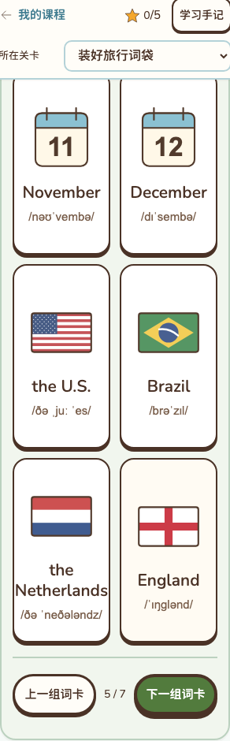
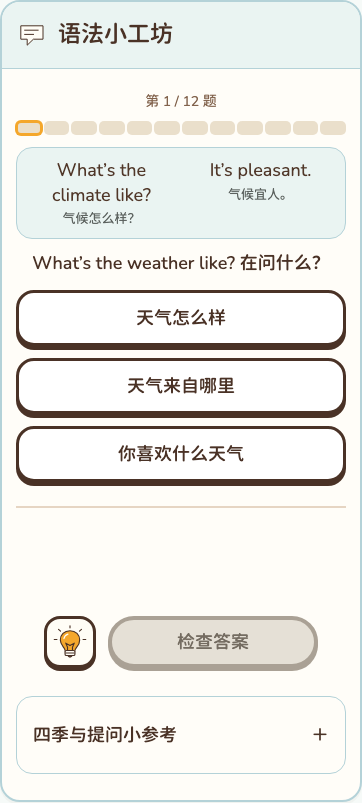
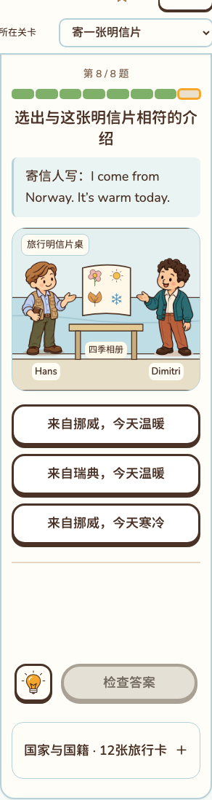
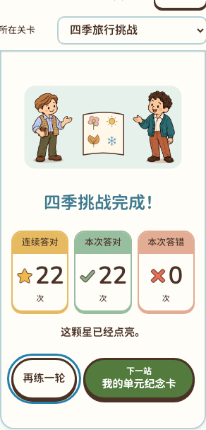
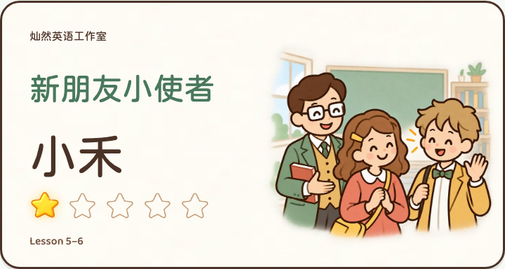
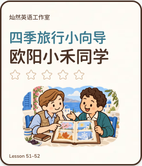
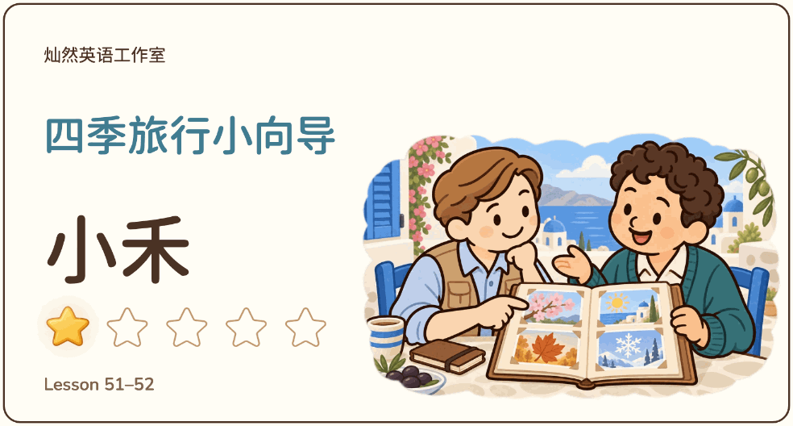
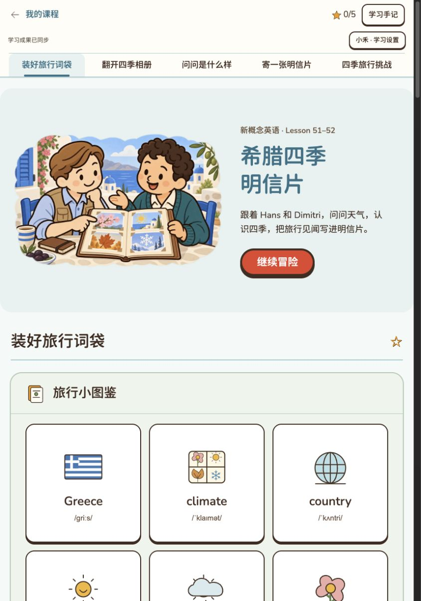

Lesson 51–52 · 希腊四季明信片
2026-10-13 · 本地页面证据。全部账号均为虚构测试账号；自动化与目视检查不等同于教师、儿童和微信真机验收。未提交、未推送、未部署。
检查记录 · 设计与题稿
桌面：春季长对白与中文
对白在场景内滚动，完整人物在两侧相向。

320宽：秋季长对白与中文
三个月份的描述完整可读，人物与相册不被气泡遮挡。

320宽：月份与长国名
the Netherlands、September与音标完整显示。

语法：短示范后立即练习
示范问气候，当前题问天气；之后撤去支持独立应用。

应用：读取明信片
同时核对来源与天气；只有检查正确后明信片才完成。

综合挑战完成：固定三卡
连续答对／本次答对／本次答错，采用已确认星／勾／叉图标。

已认可样板 Lesson 1–2
同一虚构姓名小禾、同为一星。
已认可样板 Lesson 3–4
同尺寸检查人物比例、互动与文字留白。
已认可样板 Lesson 5–6
同尺寸同星数保留对照。

新卡 Lesson 51–52
海边近景与四季相册形成故事识别；新卡待用户确认。
真实账号完成五区
姓名、五颗星与首次五星日期来自隔离测试账号。
长姓名手机卡
320宽姓名与插画分区，无重叠。

一星真实下载动图
984×528、60帧；亮星发光，文字和插画稳定。

五星真实下载动图
60帧循环，新增五星金边；桌面下载不代表微信保存验收。
最终本地账号预览
封面标题按短语换行；入口包含登录、班级课程权限和纪念册。
